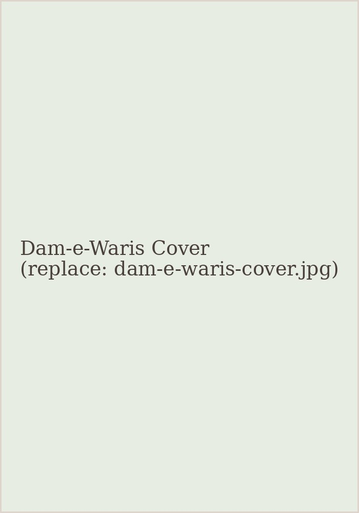

دَمِ وارث
DAM-E-WARIS
Family Drama · Thriller · Romance · Psychological
About the Novel
Dam-e-Waris follows a family bound together by blood and quietly pulled apart by the things left unsaid. At its centre is an inheritance — not only of property, but of temperament, guilt, and old wounds passed from one generation to the next.
As old secrets surface, each member of the family is forced to confront what they have carried in silence for years. Woven through with suspense and tenderness in equal measure, the novel asks what we truly owe the people who raised us — and what it costs to finally speak.
Novel Information
Title
دَمِ وارث
Author
Ali Raza Afzal
Language
Urdu
Genres
Family Drama · Thriller · Romance · Psychological
Read Dam-e-Waris
The full novel, available to read directly in your browser.
If the reader above does not load, you can open the PDF directly.
Prefer Reading on Pratilipi?
Dam-e-Waris is also available to read on Pratilipi, episode by episode.
Follow the Journey
Follow Ali Raza Afzal on Instagram for excerpts, reviews, new episodes, and updates.
© 2026 Ali Raza Afzal. All Rights Reserved.
No part of this work may be reproduced, distributed, published, transmitted, or adapted without prior written permission from the author, except where permitted by applicable law.